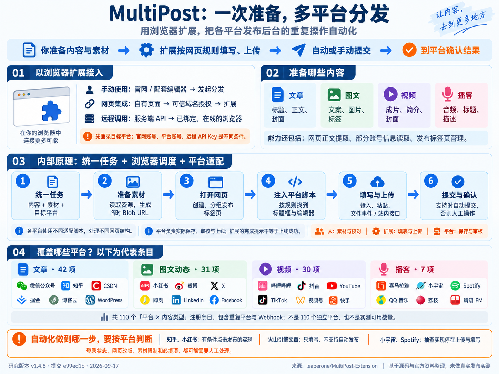

01
安装并打开入口
安装 Chrome / Edge 扩展，点击工具栏图标。当前版本会打开官网发布页；若出现登录页，先完成官网登录。
将用户准备好的文章、图文、视频和播客，按目标平台要求填写、上传，并在适配器支持时提交发布。源码覆盖 70 余个平台／服务、110 项内容适配；最终结果仍需到平台确认。
使用：准备 → 分发 → 核对结果。
原理：统一任务 → 浏览器执行 → 平台适配。每一步都对应具体能力与限制。
你准备内容，扩展处理各平台页面上的重复操作，最终到平台确认结果。

以“我已有内容，要发到几个平台”为例。左侧是你的操作，右侧说明这一步体现的能力。
安装 Chrome / Edge 扩展，点击工具栏图标。当前版本会打开官网发布页；若出现登录页，先完成官网登录。
在装有扩展的同一浏览器中，登录要分发的平台，并确认账号能进入创作后台。
文章准备正文和封面；图文准备文案与图片；视频准备成片、简介和封面；播客准备音频与节目描述。
选择同一内容类型的目标平台。首次建议关闭“自动发布”，先观察填写效果。
发起发布后，等待素材处理和各平台页面打开；大视频先少选平台，观察上传是否正常。
检查标题、正文、图片、封面、分类与标签；未自动提交的平台由你补齐必填项，再确认发布。
到平台内容管理页检查草稿、审核中或已发布状态。失败时先确认是否已创建内容，再重新执行。
官方操作说明：快速开始。具体按钮与可选字段可能随官网更新；本页不把仓库残留的旧表单组件当成当前官网界面。
差别主要在“谁准备内容、谁发起任务”。目标平台的填写与上传仍由浏览器扩展完成。
适合个人创作者，使用时无需自行写调用代码。
配套编辑器是另外的项目。官方说明要求添加题图；不能把这条编辑器要求推广为所有扩展入口的统一限制。编辑器说明 ↗ · 对应源码 ↗
适合已有编辑器、素材管理页或内容生成页面的开发者。
window.postMessage 发出发布请求。received 只能说明后台接收了请求，后续继续观察发布窗口和平台页面。适合将发布接入内容生产流程，仍需一个在线的浏览器客户端。
targetClientId。POST https://api.multipost.app/extension/task，指定执行端、任务类型和内容。NEW_TASK 后打开任务 URL；调用任务详情接口追踪任务，再到平台核实最终结果。上层决定“发什么、发到哪里”；扩展负责“打开哪一页、怎样操作”；平台负责真正保存、审核和发布。
整理内容、平台与执行意图
按平台注册表找到对应适配函数
沿用登录会话，最后由平台保存与审核
原创源码示意。网页消息入口与远程任务入口在扩展侧汇合；云端服务内部不在这个仓库中。
前端把平台标识、正文、素材地址与自动发布开关放进 SyncData。平台注册表把每个标识连接到“发布地址 + 注入函数”。
源码位置 ↗内容脚本监听网页消息，检查来源域名并转发 chrome.runtime 消息。后台先保存任务、返回 received，再打开扩展自己的发布窗口。
源码位置 ↗发布窗口保存原始数据为 origin，按内容类型获取资源并生成 Blob URL；部分正文图片地址被替换，为后续上传准备字节数据。
源码位置 ↗普通路径逐个创建发布标签页，等待加载并加入标签组。页面加载后触发注入；每轮还等待约三秒，但不等待平台最终发布回执。
源码位置 ↗chrome.scripting.executeScript 传入对应函数和任务数据。函数在具体页面里寻找标题框、正文编辑器和上传控件。
源码位置 ↗通过 value、input/change、ClipboardEvent、DataTransfer 和 File 等浏览器机制填表或模拟粘贴、选文件；部分适配器调用站内接口。
源码位置 ↗支持自动发布的函数读取 isAutoPublish 并尝试点击按钮；其他函数只填入，或明确拒绝自动提交。这个开关不会自动生成缺失的适配逻辑。
源码位置 ↗后台返回标签页集合并加入内存中的管理列表；发布窗口显示完成。当前链路缺少将每个平台的发布 ID / 内容 URL 汇总为成功条件的步骤。
源码位置 ↗展开查看机制与限制的因果关系，而不是只记住几个技术名词。
多数适配函数直接操作用户已经登录的发布页面，提交动作沿用该页面的会话。网页消息桥接是否允许调用由可信域名控制；远程服务的 API Key 则用于云端鉴权。这是三层不同的条件，不能统称为“完全无需登录或密钥”。
核对实现 ↗标题框可设置 value 后派发 input 和 change；富文本编辑器通常维护自己的内容状态。以知乎为例，代码创建带 text/html 的粘贴事件，让编辑器按粘贴行为接收正文，再触发相关事件。页面选择器或编辑器机制变化时，这条适配路径就可能失效。
核对实现 ↗先从素材地址读取数据，再构造 File，加入 DataTransfer，把其 files 赋给页面文件输入控件并触发 change 等事件。Blob URL 是浏览器内的临时资源引用，不是已经上传到平台的永久链接。大文件与多个平台可能增加内存和等待成本。
核对实现 ↗不是。WordPress 适配器还从页面上下文读取 nonce，调用站内媒体上传接口，再处理返回的素材地址。这说明“浏览器执行”可以结合 DOM 操作与站内请求，但每个平台的鉴权、接口和数据结构仍需分别适配。
核对实现 ↗标签页 complete 表示页面加载事件，不代表前端编辑器已准备好。适配器又使用选择器、MutationObserver、超时和固定延迟来等待具体控件。网络延迟、登录跳转和页面改版都会改变时序，因此固定等待不能保证所有场景成功。
核对实现 ↗createTabsForPlatforms 返回的是标签页。注入由页面事件触发，公共链路没有把每个注入函数的最终结果收集为发布凭证；handlePublishComplete 收到回调后直接切换完成提示。因此“已接收、已开页、已填入、已提交、已上线”需要分开判断。
核对实现 ↗标签页管理记录保存在后台内存数组；重载功能更新页面地址并再次注册脚本注入。它方便恢复页面操作，但这段实现没有提供持久队列和发布去重语义。后台重启后的任务恢复、自动重试和服务端状态一致性需要另行验证。
核对实现 ↗抓取脚本先按 URL 选择站点提取器；若没有取到正文，则回退到 Readability。它可给内容制作提供输入，但抓取与分发是两条独立能力。仓库中保留了调用抓取的表单组件，当前 popup / options 已转到官网，不能据此声称该旧表单就是现在的使用界面。
核对实现 ↗isAutoPublish: false。选择一种内容，查看输入、输出与平台范围。所有条目均可追溯到固定版本源码。
统计口径：平台名称去重、排除 Webhook，并合并今日头条 / 头条号，共 77 个平台／服务。110 项为跨内容类型注册总数，含 Webhook；均不代表已实测可用数量。
把文章正文和封面交给不同平台的编辑器，减少反复复制、粘贴和上传。
标题、摘要、HTML / Markdown 正文、封面；部分适配器另处理标签、分类、原创声明和评论设置。
各平台发布编辑器中的文章内容。是否自动提交、如何处理正文图片，取决于具体适配器。
名称取自固定版本注册表与中文语言包；点名称查看注册位置。清单含实验性条目，未逐平台运行。
准备一份正文和素材，再由各平台脚本填标题、插入内容、上传图片或视频。
标题、正文、图片列表、视频列表和可选标签。字段被声明，不代表每个平台都支持所有组合。
平台发帖页面中的图文内容；支持自动提交的适配器会根据开关点击发布。另有 Webhook 入口。
名称取自固定版本注册表与中文语言包；点名称查看注册位置。清单含实验性条目，未逐平台运行。
把视频文件、标题、简介和封面带入上传页面，适合已有成片的多平台分发。
视频文件、标题、简介；可选标签、横竖封面、分类、合集和定时时间。实际支持依平台而定。
平台后台的上传任务和表单内容。转码、审核、发布成功由平台处理，必须另行确认。
名称取自固定版本注册表与中文语言包；点名称查看注册位置。清单含实验性条目，未逐平台运行。
为播客提供独立数据类型和发布入口，将音频与节目描述交给平台编辑器。
音频、标题、描述；类型中还定义了可选封面、标签和分类。
平台上传页面中的音频和节目资料。小宇宙、Spotify 的抽查路径以上传和填写结束。
名称取自固定版本注册表与中文语言包；点名称查看注册位置。清单含实验性条目，未逐平台运行。
把能力讲清楚，才能决定哪些操作可以自动化，哪些仍需要人来确认。
| 关注点 | 源码能确认什么 | 使用时如何理解 |
|---|---|---|
| 免登录、免密钥 | 目标平台会话用于发布；官网入口本次访问转到登录页；远程 ping 有 API Key 检查。 | 官网账号、平台账号与远程 API Key 是不同层次。 |
| 自动发布 | 知乎、小红书有条件点击；火山引擎文章拒绝自动发布。 | 按“平台 × 内容类型”评估，不能全局假设支持。 |
| 播客支持 | 小宇宙与 Spotify 的抽查路径上传音频、填入资料。 | 这两条路径未见最终点击发布步骤。 |
| 完成提示 | 后台返回标签页列表后，发布窗口就设置完成状态。 | 不是所有平台发布成功的回执；要确认内容 URL 或后台状态。 |
| 定时发布 | 官方云端 API 有计划任务；抖音视频适配器另可填写平台定时控件。 | 云端安排执行与平台定时上线不同；离线执行和调度可靠性未实测。 |
| 格式与稳定性 | 适配器依赖具体页面选择器、事件及等待时间。 | 平台改版、登录失效、素材限制都可能影响结果。 |
主要价值在于平台适配经验和执行端组织。适合接在编辑器、素材库或内容生成工具之后。
若要成为可靠的日常工具，还要补上结果确认、失败接管与维护机制。
上游只整理内容、素材与目标平台，平台差异留给适配器，避免每个入口各写一遍发布逻辑。
富文本粘贴、图片上传、封面选择、页面等待与站内接口，是最有实际参考价值的实现细节。
分别记录已填写、已提交、待审核、已发布和失败；重试前先检查是否已生成内容。
记录每个平台的自动提交、封面、标签、定时和验证日期。以上为集成建议，并非已完成改造。
源码阅读已完成首轮；以下是建议验证路线，尚未执行真实发布。
已检查固定提交的入口、消息、素材与发布链路，并补充查阅官方操作和 API 文档。
尚未安装或构建扩展、执行上游测试、实测发布及远程 API。本页展示研究结果，不提供真实发布服务。
版本 1.4.8 · 提交 e99ed1be26c3bb898b026a436810d96e2c02d81d
结论来自源码静态阅读，不代表线上平台测试结果。永久链接固定到研究提交，便于复核。